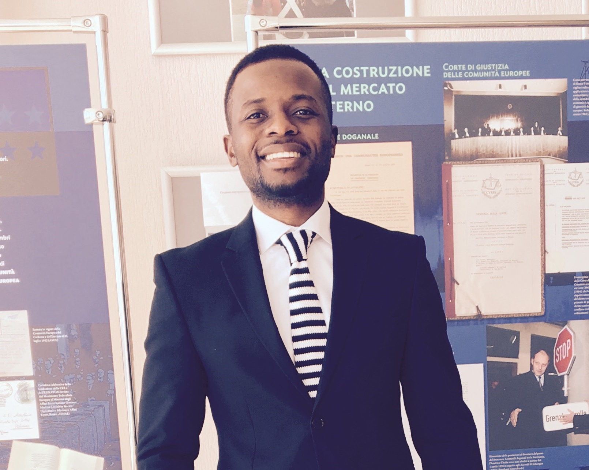

Damilare Olusoga
Front-End Developer
Summary:
Front-End developer that is passionate about learning and development.
Eager to tackle problems and continue to find ways to maximize user efficiency.
Education:
- Belarusian State University - Bachelors of Science, Internantional Economics (2013-2017)
- Georgian State University - Masters of Science, Computer Science (2024 - present)
Work Experience:
Senior Quality Assurance Specialist
Yardi Systems (2022 - Present)
- Evaluate and test new enhancements and fixes to program functions per user requirements, design specifications and established standards
- Perform unit testing on defect resolutions to ensure accuracy, integrity, interoperability, and completeness to achieve desired results
- Follow through and track software problems, verify corrections; document, maintain and monitor reports and metrics
- Perform sanity testing on every release to ensure basic/main functionalities are working as they should.
- Collaborate with team members and actively participate in regular meetings to evaluate product change requests
- Collaborate with developers and create documentation via internal customer relations management tools and technical reports in support of issue resolution
Quality Assurance Engineer
PASV (Nov. 2018 - Dec. 2021)
- Created and executed high-quality test cases to cover all possible software scenarios using Postman, TestRail, Excel, Google spreadsheet
- Participated in the planning and execution of functional, integration, regression, usability, compatibility, and system testing
- Collaborated in agile development, communicating through Slack, and JIRA daily and actively participate in team SCRUM meetings
- Identified, reported and tracked defects using JIRA and worked closely with dev. team, analyst to ensure bugs are fixed
- Performed different types of testing (black box, sanity, smoke, exploratory, regression, etc).
Skills:
- Languages - HTML, CSS, JavaScript
- Library - React
- Framework - Angular.js
Awards & Certifications:
- Udemy - The complete web development Bootcamp
Other: